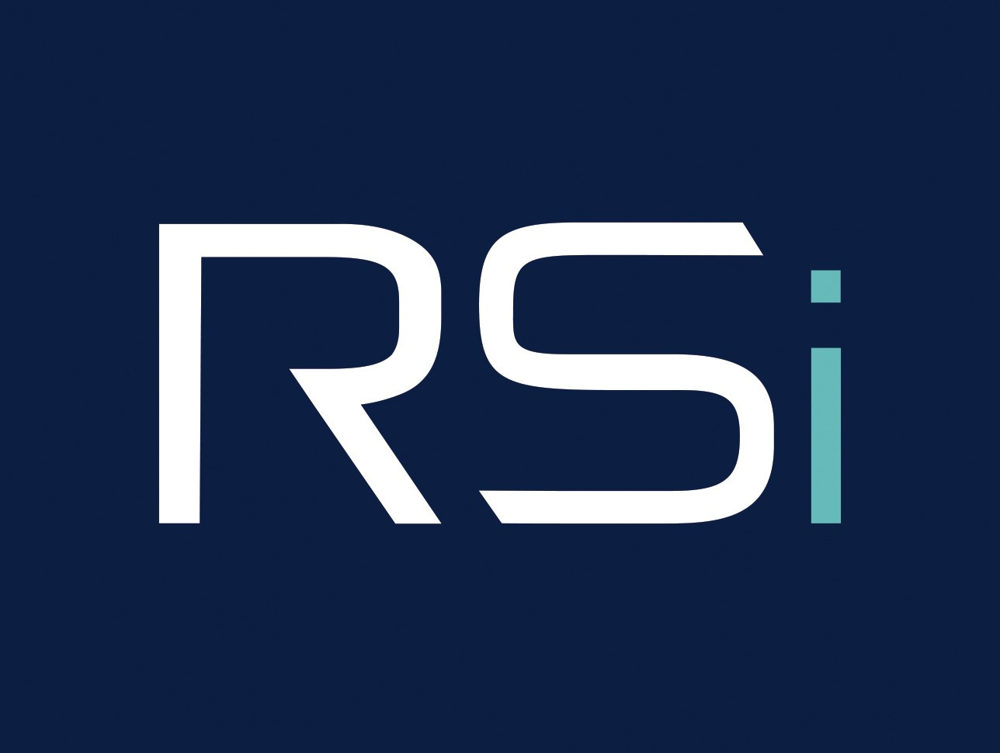

about madison
I like the messy middle.
I like immersing myself in new domains and turning messy business problems into creative, data-driven software. fastlabs is focused on modern data architecture, measurable goals, and custom tools that help small businesses unlock serious growth.


